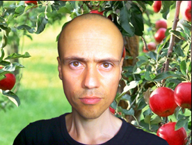

LSFW - PREFAZIONE A CURA DI MARCO GIAI-LEVRA

I documenti informativi riguardo l’alimentazione pranica, il nutrirsi di Luce, il breatharianismo, e così via sono molto numerosi e di svariata natura. Ciò che caratterizza questo volume però, e che lo differenzia dagli altri, è la sua natura metodico-pratica che accompagna il lettore dalla prima all’ultima pagina, fornendogli informazioni e nozioni riguardanti il reale funzionamento del corpo umano, le diverse metodologie per raggiungere lo stadio di breatharianismo descritte ed esaminate in dettaglio, gli esercizi fisici, mentali e spirituali effettivamente utili: insomma, un contenitore pratico di indicazioni e relazioni direttamente stimabili e valutabili. In questo l’autore si distacca dalla gran parte dei guru dell’alimentazione pranica, in quanto cerca in tutti i modi di spiegare e studiare intellettualmente il fenomeno, attraverso la sua esperienza diretta, evitando il diffuso e sovente fastidioso atteggiamento naïf, tipico di molti che si accostano a questo argomento.
Quello che fin da subito mi ha colpito di Joachim Manfred Werdin è infatti il suo approccio scientifico, derivante dal grande know-how tecnico proveniente dagli innumerevoli esperimenti compiuti su se stesso fin dall’età di sedici anni e grazie al quale questa è un’opera, tra le più complete nel suo genere, in cui emerge un forte tentativo di spiegare filosoficamente e intellettualmente ciò che l’intelletto in realtà non potrebbe comprendere, ma che serve per spostarsi poi gradualmente verso la sfera divina dell’intuizione.
È proprio tale atteggiamento che mi ha convinto a tradurre questo libro, sicuro di aver fatto cosa gradita, ma soprattutto utile, a tutti gli interessati.
Durante tutto il lavoro di traduzione ho consultato costantemente l’autore allo scopo di interpretare correttamente e dettagliatamente il suo pensiero. Pertanto ho aggiunto, nei passaggi in cui potevano sorgere dei fraintendimenti, delle note esplicative allo scopo di chiarirne il significato. Trattandosi di un manuale, e quindi per sua natura consultabile anche solo nelle specifiche sezioni interessate, in taluni casi i concetti delle note di traduzione e di redazione sono stati ribaditi o ripetuti al fine di far comprendere immediatamente l’accezione del passo in questione senza l’obbligo di leggere i contenuti precedenti.
Questa versione italiana del testo risulta essere attualmente la più completa in quanto nata dalla fusione di quella inglese con l’originale polacca, i cui contenuti non sempre erano analoghi, ma in certune occasioni complementari. Rispetto all’originale sono state addizionate ulteriori immagini e rappresentazioni grafiche suppletive, nonché contenuti essenziali alla comprensione sequenziale del trattato, come ad esempio l’integrazione di termini extra nel glossario, che nell’opera primigenia venivano menzionati nello scritto senza averne fornito precedentemente la relativa definizione; analogamente sono state integrate anche migliorie di carattere grafico-ornamentale e di layout.
Marco Giai-Levra
Estratto dalla prefazione del libro.